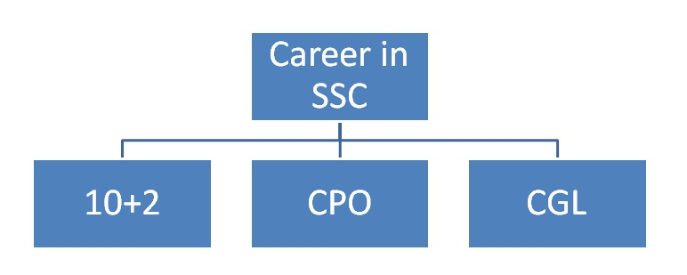
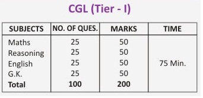
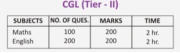

Career in SSC

SSC
The Staff Selection Commission (SSC) conducts examination for recruitment of staffs in various departments and ministries of Central Government.
SSC CGL
The Staff Selection Commission (SSC) conducts the Combined Graduate Level (CGL) examination for selection of candidates in various departments of Central Government. SSC CGL exam is conducted in three tiers as indicated below:
- Tier –I (Pre)
- Tier -II (Mains)
- Tier -III (Interview & Skill Test)
All participants who registered himself/herself in CGL firstly have to fight with Tier-I exam and Shortlist candidates in Tier-I exam will be called for Tier-II Exam. Marks scored in Tier-II exam will be decided for short listing for interview. In Tier-III Computer Proficiency and Skill Test are also conducted if applicable.
Subjects and Exam Pattern of SSC CGL 
Eligibility Criteria of SSC CGL
- Education: Graduation
- Age:
- 20 to 27 years (Assistant Grade & SIs in CBI)
- 18 to 27 years (Inspectors of CE/IT & Accountants/Auditors/UDC)
- 20 to 25 years (SIs in CPOs)
SSC 10+2
SSC conducts Combined Higher Secondary Level Exam normally known as SSC 10+2 for the posts of LDC (Lower Division Clerk) and DEO (Data Entry Operator) in various departments of Central Government. SSC 10+2 exam consists of two parts as indicated below:
- Written Test
- Practical Test
Eligibility Criteria of SSC 10+2
- Eligibility Criteria of SSC 10+2
- Age: between 18 years and 27 years